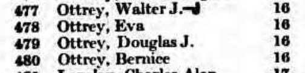
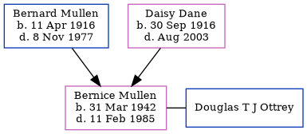

Bernice Ottrey (née Mullen) 1942 - 1985
[ Home ] | [ Calendar ] | [ Surnames Index ] | [ Errors ] | [ Family History ]The older of 2 children of Bernard Mullen and Daisy Dane, Bernice Mullen, the third cousin once-removed on the mother's side of Nigel Horne, was born in Trowbridge, Wiltshire, England on 31 Mar 19421,2. She married Douglas T J Ottrey in Maidenhead, Berkshire, England around May 19643. In 1965, she was living at 16 High Street, Wallingford, Oxfordshire, England4.
She died on 11 Feb 1985 in Oxford, Oxfordshire, England2.
Parents
- Bernard William was born on 11 Apr 1916
- Daisy Lillian was born on 30 Sept 1916
Citations
- England & Wales births 1837-2006 - Findmypast
- England & Wales deaths 1837-2007 - Findmypast
- England & Wales Marriages 1837-2005 - Findmypast
- Berkshire, England, Electoral Registers, 1840-1965
Media
Berkshire, England, Electoral Registers, 1840-1965

England & Wales births 1837-2006 - BMD/B/1942/2/AZ/000872/015
England & Wales marriages 1837-2005 - BMD/M/1964/2/AZ/000640/055
England & Wales deaths 1837-2007 - BMD/D/1985/2/75121695
Family Tree
Map
Generated by ged2site. Last updated on Jul 3, 2024
Known Issues
Listed in the residence for 1965, but spouse Douglas T J Ottrey is not